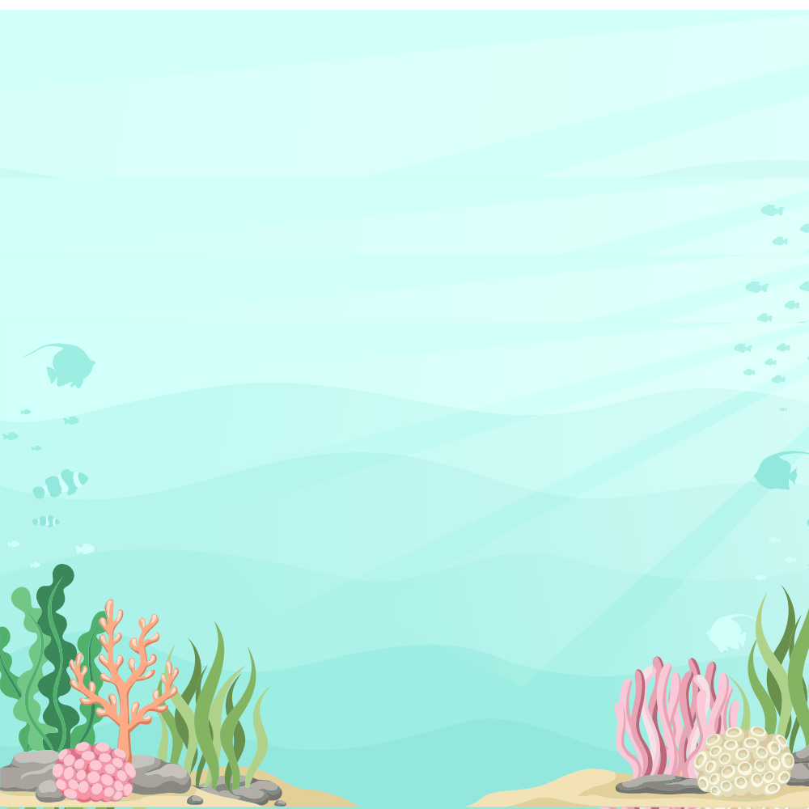

O Peixinho Curioso
Clique para abrir
Era uma vez no fundo do mar...
Agora não...

O Papai e a Mamãe estavam muito ocupados limpando a casa.
Então o Peixinho resolveu explorar o oceano sozinho!

Mas ele nadou tanto que acabou se perdendo...
Ainda bem que seus pais o encontraram e eles voltaram felizes!